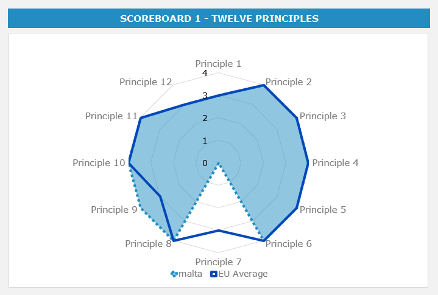
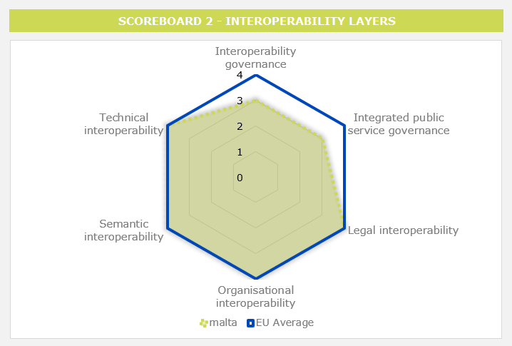
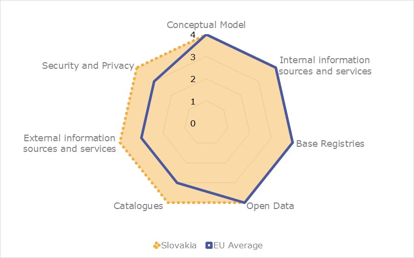
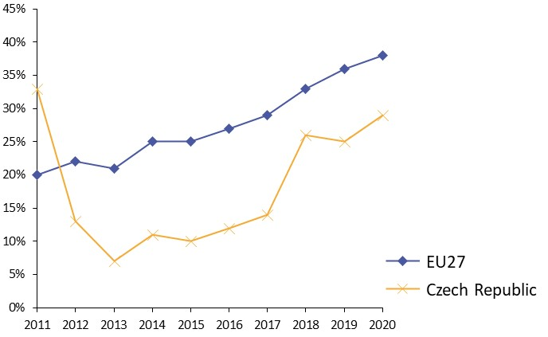

ISA2
Digital Public Administration factsheet 2022
Malta
2 Digital Public Administration Highlights 10
3 Digital Public Administration Political Communications 12
4 Digital Public Administration Legislation 26
5 Digital Public Administration Governance 35
7 Cross Border Digital Public Administration Services for Citizens and Businesses 53

-
Country
Profile
1
The following graphs present data for the latest Generic Information Society Indicators for Malta compared to the EU average. Statistical indicators in this section reflect those of Eurostat at the time the Edition is being prepared.
Percentage of individuals using the internet for interacting with public authorities in Malta | Percentage of individuals using the internet for obtaining information from public authorities in Malta |
Percentage of individuals using the internet for downloading official forms from public authorities in Malta | Percentage of individuals using the internet for sending filled forms to public authorities in Malta |
In 2017, the European Commission published the European Interoperability Framework (EIF) to give specific guidance on how to set up interoperable digital public services through a set of 47 recommendations. The picture below represents the three pillars of the EIF around which the EIF Monitoring Mechanism was built to evaluate the level of implementation of the EIF within the Member States. It is based on a set of 71 Key Performance Indicators (KPIs) clustered within the three main pillars of the EIF (Principles, Layers and Conceptual model), outlined below.

Source: European Interoperability Framework Monitoring Mechanism 2021
For each of the three pillars, a different scoreboard was created to breakdown the results into their main thematic areas (i.e. the 12 principles of interoperability, the interoperability layers and the components of the conceptual model). The thematic areas are evaluated on a scale from one to four, where one means a lower level of implementation and 4 means a higher level of implementation. The graphs below show the result of the third EIF Monitoring Mechanism data collection exercise for Malta in 2021.

Source: European Interoperability Framework Monitoring Mechanism 2021
Malta’s results in Scoreboard 1 show an overall good implementation of the EIF Principles, despite the lack of data for Principle 7 (Inclusion and Accessibility), as the country scores above the European average for Principle 9 (Multilingualism). Areas of improvements are concentrated in Principle 4 (Reusability) and 12 (Assessment of Effectiveness and Efficiency) and particularly on Recommendation 06, calling for the reuse and sharing of solutions, and cooperation in the development of joint solutions when implementing public services and on Recommendation 19 calling for the evaluation of the effectiveness and efficiency of interoperability solutions.

Source: European Interoperability Framework Monitoring Mechanism 2021
The Maltese results for the implementation of interoperability layers assessed for Scoreboard 2 show an overall good performance with scores of 3 and 4. Potential areas of improvement to enhance the country’s implementation of the recommendations under Scoreboard 2 are concentrated in the areas of interoperability governance and integrated public service governance. More specifically, Malta should actively participate in standardisation work relevant to its needs so as to ensure that all requirements are met when it comes to interoperability governance (Recommendation 24). Additionally, it should further ensure interoperability and coordination over time when operating and delivering integrated public services by putting in place the necessary governance structure (Recommendation 25).

Source: European Interoperability Framework Monitoring Mechanism 2021
Malta’s scores assessing the Conceptual Model in Scoreboard 3 show a good performance in the implementation of recommendations associated with internal information sources and services, base registries, security and privacy and open data. However, some improvements can be made in implementing recommendations related to the conceptual model itself, as well as with regards to external information sources and services. Precisely, the lack of a common scheme for interconnecting loosely coupled service components and putting in place the necessary infrastructure for establishing and maintaining public services (Conceptual Model - Recommendation 35) hinders the overall Maltese score on the conceptual model. Additionally, the use of external information sources and services while developing public services could improve the score on the external information sources and services category (External information sources and services – Recommendation 45).
Additional information on Malta’s results on the EIF Monitoring Mechanism is available online through interactive dashboards.
The graph below presents the main highlights of the latest eGovernment Benchmark Report, an assessment of eGovernment services in 36 countries: the 27 European Union Member States, as well as Iceland, Norway, Montenegro, the Republic of Serbia, Switzerland, Turkey, Albania and Macedonia (referred to as the EU27+).
The study evaluates online public services on four dimensions:
The 2022 report presents the biennial results, achieved over the past two years of measurement of all nine life events used to measure the above-mentioned key dimensions. More specifically, these life events are divided between seven ‘Citizen life events’ (Starting a small claim procedure, Moving, Owning a car, Health measured in 2021, and Career, Studying, Family life, measured in 2020) and two ‘Business life events’ (Regular Business Operations, measured in 2021, and Business start-up, measured in 2020).

Source: eGovernment Benchmark Report 2022 Country Factsheet

Digital Public Administration Highlights
2
| Digital Public Administration Political Communications |
The new National Digital Strategy will be launched in the upcoming months and set out how the government will act as incubator and accelerator for change towards digitalisation.
The National Data Strategy 2022-2027, which aims to build upon the exponential growth of data and the various technologies used for its collection, processing, storage, preservation and transmission, whilst also addressing the challenges met on a national scale over the past years, is due to be published in 2022.
Moreover, a new Cyber Security Strategy is currently being finalised following workshops held with the academia, the public sector and the general public. The new Strategy will cover years 2022 to 2024 and is planned to be published in Q2 of 2022.
Similarly, the National eSkills Strategy 2022-2024 is currently being drafted with the ambition to further improve Malta’s position in digital education and skills.
On 3 December 2021, the Maltese Ministry for Justice and Governance launched its new Digital Justice Strategy for the years 2022-2027, which seeks to adopt a strategic framework to make further use of the available technologies, respect the rule of law and the substantive and procedural rights of all citizens.
| Digital Public Administration Legislation |
In June 2021, the Regulation (EU) 2021/887 came into force, establishing the European Cybersecurity Industrial, Technology and Research Competence Centre and the Network of National Coordination Centres. Following its adoption, Member States had six months to appoint a public entity to fulfil the role of a National Coordination Centre. MITA has been officially appointed and recognised as Malta’s National Coordination Centre.
| Digital Public Administration Governance |
Business First, a joint venture between Malta Enterprise and the Malta Chamber of SMEs, is currently working on creating a Business Portal which, when implemented, will contribute towards the national strategy in transforming Malta into a digitally enabled economy across all sectors of society.
| Digital Public Administration Infrastructure |
A Legal Notice is currently in the process of being established for the implementation of a Person Register which shall provide measures to facilitate the sharing and re-use of personal data between public sector bodies and enable the linking between the core person details record and other records held in other official registers containing equivalent personal data in relation to the same person.

Digital Public Administration Political Communications
3
National Digital Strategy
The new National Digital Strategy, which is due to be launched over the coming weeks/months, sets out the Maltese government’s vision on how it intends to maintain its momentum as a global digital leader and a champion of emerging technologies. It sets out how the government will act not only in its traditional role as promoter and regulator, but also as incubator and accelerator for change towards digitalisation.
It is built around a vision of establishing digital as the key driving force for transformation – where life in Malta is further improved, business thrives, and government services are more accessible. To achieve this vision, several goals have been identified that the nation will work towards while the Strategy is being implemented. These goals are supported by six guiding principles that encompass how digital should be applied and focused. Consequently, one of the strategy’s focal points addresses the diverse needs, requirements, and expectations of various cohorts of Malta’s society and economy – specifically, the way digital can make a real difference in daily life, the digital opportunities that arise, and the related challenges that will need to be addressed from a three-pillar perspective - society, business and government.
Another of the strategy’s focal points looks at how digital can shape and strengthen Malta’s economy. More specifically, this is being addressed through a strategic course of action that investigates growth through innovation and further digital strategic focus on various sectors of social and economic importance. Government plays a leading role by further investing in emerging technologies, such as by setting up a digital innovation hub (DIH), providing access to government open datasets, expanding funding for research and innovation (R&I), and cultivating an ecosystem that is conducive to and supportive of digitalisation.
Undoubtedly, attention must also be paid to a number of enablers, among which those related to regulation and legislation, digital infrastructure and funding, as well as cybersecurity, data and eSkills are key.
Berlin Declaration on Digital Society and Value-Based Digital Government
In December 2020, the Maltese government signed the Berlin Declaration on Digital Society and Value-Based Digital Government, thus re-affirming its commitment – together with other EU Member States – to foster digital transformation in order to allow citizens and businesses to harness the benefits and opportunities offered by modern digital technologies. The Declaration aims to contribute to a value-based digital transformation by addressing and strengthening digital participation and digital inclusion in European societies.
New Strategy for the Public Service – Achieving a Service of Excellence
In December 2021, the public service launched a new strategy for the next five years, called Achieving a Service of Excellence. A steering committee headed by the Principal Permanent Secretary was set up and four working groups reporting to this committee were formed: three groups were exclusively focused on the three main pillars this strategy is based on - people, technology and services, while the fourth group was focused on drafting the final document. The vision outlines what the forty-five main initiatives and eleven strategic objectives captured in the plan aim to achieve – a seamless public service that is accountable, sustainable and that continually strives to provide a service of excellence. A study on public service renewal commissioned in 2020 highlighted the need to focus the efforts on improving the quality of services, the accountability towards clients, as well as the sustainability as a large organisation. Public service values are intended to inspire respect, promote ethical conduct, acknowledge the highest integrity standards, safeguard clients’ rights, and promote a culture that embraces honesty, correctness and professionalism. In order to support these values, a set of guiding principles have been identified – effective leadership, holistic people management and employee empowerment, ongoing measurement, continuous improvement, decision making and policy making and client centricity. A strategic plan with tangible outcomes and milestones was compiled and for each initiative and strategic objective a champion has been identified.
Centralised Digital Enabling Services Policy
The policy published in December 2019 aims to encourage the use of centralised digital enabling services within the public administration and guide the adoption of alternative services in order to ensure data security. The policy recommends that all government bodies and agencies should, unless they have specific needs, give priority to the following centralised digital enabling services provided by the government:
National Data Strategy
The National Data Strategy 2022–2027 (to be published in 2022) aims to build upon the exponential growth of data and the various technologies used for its collection, processing, storage, preservation and transmission, whilst also addressing the challenges met on a national scale over the past years. It aims to engender the general principles of fairness and transparency so that individuals, and public and private sector organisations can process data to the maximum extent possible, as permitted by the law, for the benefit of natural or legal persons owning that data. It is designed to encourage and empower the various data owners to share and re-use data permitted by the relevant and applicable legislation and to publish as open data all the data which is not of a sensitive or personal nature.
Malta.ai Strategy
The Malta.ai Strategy was published in 2019 and sets a vision for Malta to become the ‘ultimate artificial intelligence (AI) launchpad’ by 2030 with a series action plans to be undertaken in the first phase of the implementation plan intended to serve as the foundation for future strategy phases.
The strategy sets out and funds six AI-related pilot projects from six key public sectors domains, i.e. transport, education, health, customer care, tourism and water and energy. Such projects facilitate the path for more intake from the private sector.
A summary of some of these projects is provided in this section. The Ministry of Tourism is creating an AI-powered platform intended to provide and enhance touristic experience by leveraging valuable insights from a collection of data sources, providing tourists with a personalised experience through the development of rich tourist personas based on demographics, interests and lifestyle choices. The Ministry of Education is working on a pilot project that will develop an AI-powered adaptive learning system to help students achieve better education outcomes through personalised learning programmes based on student performance, ambitions, and needs. Servizz.gov is working on a pilot project to develop a chatbot which will use AI to assist citizens in efficiently obtaining the information that they are seeking. The Ministry for Energy, Enterprise and Sustainable Development is working on a pilot project that is expected help utility companies to maximise resources and subsequently provide responsive real-time customer service management through the use of AI and provide consumers the ability to make real-time adjustments to attain optimised generation efficiency.
Apart from these six pilot projects, the National AI Strategy funded other initiatives encompassing research projects, scholarship funds and educational/awareness campaigns.
National ICT Interoperability Framework
Malta acknowledges the importance of interoperability and is working decisively towards making its public services interoperable. The Malta Information Technology Agency (MITA) is in the process of revising the current National ICT Interoperability Framework (NIF), to ensure its alignment with the European Interoperability Framework (EIF). This new NIF is planned to be published in 2022 and has the primary goal of encompassing and substantiating the most recent EIF, providing an action plan tailored to the national context. The NIF therefore uses the EIF interoperability principles and recommendations as a basis to direct national efforts towards a connected government and public administrations through legal, organisational, semantic, and technical interoperability. The end goal is to modernise the public sector using the latest technology, whilst maximising the benefits and innovation and reducing the burdens of the immense data of the domain.
Enterprise Architecture Policy
Amongst the Government of Malta ICT (GMICT) policies, the Enterprise Architecture Policy for Interoperability and Reuse regulates architecture building blocks and complements the NIF. GMICT policies have recently undergone a rationalisation exercise to ensure their currency.
No political communication was adopted in this field to date.
National Identity Management System
The National Identity Management System (NIDMS) provides the functionality necessary to consolidate eID Account data and seamlessly associate them with the eID, eRP and ePassport lifecycle. The solution provides access management tools to determine the access level to be granted to administrators/operators.
The NIDMS system consists of a number of distinct components operating together to deliver eID cards, eResidence cards, and ePassports to applicants. Electronic cards contain qualified electronic signatures compliant to EU Regulation No. 910/2014 (eIDAS Regulation).
Malta Cybersecurity Strategy
Following the issue of a Green Paper for a National Cybersecurity Strategy in late 2015, which led to a nationwide consultation process during the first half of 2016, the government of Malta launched the first National Cybersecurity Strategy. The Strategy served as a framework to protect information systems, networks and information on the internet, together with the respective users of the services that they provide; in a nutshell, government, the private sector and civil society. The strategy was one of the action items proposed by Digital Malta – National Digital Strategy for the years 2014–2020. The key principles of the National Cyber Security Strategy aimed to reflect the various facets of cybersecurity and the essential underlying complex nature of cyberspace. Under the direction of the National Cyber Security Strategy Steering Committee, the MITA launched a campaign focusing on all strata of civil society to instil a culture towards cybersecurity awareness. The target audience included the general public, SMEs, the public sector, students and IT professionals. To achieve this, a variety of communication media were used, mainly social media, traditional media such as television, radio and news portals, together with a dedicated website. Activities included drama via TV and theatres, training, surveys, focus groups, workshops, competitions and awards.
A new Cyber Security Strategy is currently being finalised following workshops held with the academia, the public sector and the general public. The new Strategy will cover the years 2022 to 2024, and is scheduled for publishing in Q2 of 2022.
Security Governance and Operations
With regards to cybersecurity within the public sector, the MITA articulated, published and communicated an Information Security Policy. This policy is based on the ISO27001 Information Security International Standard and is applicable to everyone within the public sector. As part of its Security Governance framework, the MITA started scanning all government websites that utilised its infrastructure for the identification of vulnerabilities and subsequent rectification by the respective owners. A Client Protection Framework was developed to provide business owners with visibility on the security position in the areas for which they are responsible. This was an innovative project which re-designed the way the MITA sought to provide assurance to its clients that the infrastructure on which government data resided was adequately safeguarded from the ever-increasing threats defining today’s cyberspace. The MITA heavily invested in cutting-edge technology to provide its clients with the ability to continuously scan for vulnerabilities and obtain real-time visibility on the operational health and security profile of environments hosted on its new Hybrid Cloud Enabling Infrastructure. Information security included three main dimensions: confidentiality, availability and integrity, and involved the application and management of appropriate security measures for a wide range of threats, with the aim of ensuring sustained business success and continuity, and minimising impacts of information security incidents (reference ISO/IEC 27000). Additionally, The MITA invested in tools to aid in the detection and prevention of cybersecurity incidents, including adequate training of its employees throughout the organisation, and collaboration with other governmental departments to ensure a centralised and cohesive approach in this domain.
Messages to the public pertaining to cybersecurity are channelled through Malta’s cybersecurity page, stemming from a national cybersecurity strategy which was drafted by the MITA by appointment of the government, subsequently followed by the Malta Information Technology Agency (MITA) 2021–2023 Strategy.
Launch of the National Cybersecurity Awareness and Education Campaign
On 16 October 2018, the Parliamentary Secretary for Financial Services, Digital Economy and Innovation, in the presence of the Minister for National Security and Home Affairs, launched the National Cybersecurity Awareness and Education Campaign. As stated, the Campaign, which was one of the key goals of the National Cybersecurity Strategy published in 2016, was based on the government’s belief in the need for the entire Maltese society to be fully aware of cyber risks and the security measures to be taken. The Campaign targeted the general public, the private sector as well as the public sector – as the largest holder of critical and sensitive information – through practical training and promotional initiatives.
Implementation of the NIS Directive
The Critical Information Infrastructure Protection Unit (CIIP) Unit, part of the Critical Infrastructure Protection (CIP) Directorate in the Ministry for Home Affairs, National Security and Law Enforcement, is the national competent authority (NCA) overseeing the implementation of L.N. 216 of 2018, being the transposition of EU Directive 1148 of 2016, better known as the NIS Directive. In its capacity as the NCA for Malta, the CIIP Unit regulates CIIs, OESs and DSPs as well as the implementation of national measures to address the requirements emerging from the above-mentioned law.
This legislation aims to improve the national security capability of the country; enhances cross-border collaboration between EU NIS national competent authorities; and upgrades national supervision of critical sectors. This is achieved through both ex-ante and ex-post supervisory measures within the law.
CSIRTMalta Constituent Programme
CSIRTMalta (as part of the CIPD) is the national Computer Security Incidence Response Team (National CSIRT) with responsibility for the public and private sectors. The MHSE established the CSIRTMalta Constituent Programme for the purpose of collaborating and sharing of malware information and intelligence. CSIRTMalta is also the national entity responsible for the co-ordination of incident response for cyber related incidents. In terms of legislation CIs, CIIs, OESs and DSPs are obliged to establish their own CSIRT services or receive them to help protect their infrastructures and their clients from cyber related incidents. CSIRTMalta promotes the development of sector-specific CSIRTSs in Malta and created what is better known as the Malta CSIRT Community.
During 2020, CSIRTMalta invested EUR 965,392.00 (excluding VAT), acquired through the European CEF funding programme, in installing and commissioning specialist hardware and software to enhance its operational capabilities towards its constituents. The investment included the implementation of the European MeliCERTes Platform and a state-of-the-art Security Monitoring Centre at its main offices in Valletta, Malta.
Public Sector Cybersecurity Training
In 2019, the Malta Information Technology Agency organised a cybersecurity training course for the public sector. The primary goal of these sessions was to inform the trainees about the latest cybersecurity threats, such as social engineering, and to give an explanation of the government GMICT Policies that are based on ISO 27001 security standards.
Launch of Malta’s first Cybersecurity Summit
On 23 October 2019, the Malta Technology Agency through Cyber Security Malta organised its first Cybersecurity Summit that aimed to bring cyber enthusiasts, professionals, policy makers, the public sector and the private sector under one roof. A series of debates on various cybersecurity themes were organised such as regulatory aspects, information sharing, efficient cybersecurity protection, accessibility and much more. The Summit also featured prominent national and international guest speakers.
The same event was organised in 2020, this time online, meeting the expectations of the target audience whilst aligning with the COVID-19 public health regulations.
It is also pertinent to note that the eSkills Malta Foundation, partnered up with various stakeholders, namely Keith Cutajar, an information security consultant and court expert, the MITA, the University of Malta, the Malta Digital Innovation Authority (MDIA), Cyber Security Malta and the Chartered Institute for IT (BCS), to organise a conference on cybersecurity on 5 February 2020.
Launch of the B Secure Scheme
The B Secure Scheme is an initiative by the Maltese government, led by the Malta Information Technology Agency, to instil a cyber hygiene culture on a national level. Through this scheme, the private sector is entitled to apply for internationally recognised training, such as CISA and CISSP, and fully sponsored risk assessments on their digital infrastructure, such as penetration tests and vulnerability assessments. A total of EUR 250,000 has been allotted to this scheme that directly contributed to the improvement of Malta’s cybersecurity position within the private sector. The scheme also includes cybersecurity awareness courses for executives. These are specifically aimed at increasing awareness among board level members and decision takers of the latest threats and consequences of a cybersecurity incident. Experienced and certified cybersecurity professionals have been selected to carry out the training whilst an internationally renowned company was tasked with the responsibility to carry out the risk assessments.
Registry of Base Registers
The Registry of Base Registers is a comprehensive list of legally-based official lists and registers. This includes all the national registers, including the main Base Registers for Persons, Locations (Addresses) and Organisations, a set of administrative registers which reflect the public organisations and the organisational structures of the government of Malta, as well as the list of public services. These registers will form the basis to the Once-Only Principle Initiative within the Public Service Strategy, which seeks to ensure that public-facing services are simplified, consolidated, and integrated with back-end systems.
The quality and governance aspects of the master data is first and foremost regulated through a new set of specific legal instruments and new subsidiary legislation under Cap. 546 of the Laws of Malta (PSI Directive transposition) with the intention to give legal basis to data sharing and re-use both within and beyond public administration.
eProcurement System
Malta has implemented its eProcurement System since 2011 and has now completed the transition from traditional procurement. Public Procurement Regulations passed in 2016 obliged contracting authorities to publish all procurement calls above EUR 5 000 on the eProcurement System. During 2018, the implementation of a Contracts Register was launched with the aim of increasing transparency. A second initiative was to simplify processes and encourage wider cross-border participation, notably the implementation of the European Single Procurement Document, and its integration with eCERTIS and the National Registers in the eProcurement System.
National eSkills Strategy (2019–2021)
Emerging information and communication technologies are assuming increasing importance in our lives. This importance is not connected solely to our professional life but also to our quality of life. Whilst ensuring that society at large develops the right competence and capability to secure a better future, the need to revisit the effectiveness of strategies leading to the acquisition of digital skills by individuals, society, industry and Malta as a country is clear. This Strategy, launched by the eSkills Malta Foundation in March 2019, was aimed to complement initiatives at both the local and EU level to address the need for existing and new digital skills that shall be required in nearly all jobs in the medium term. The digital market transformed several business models that Malta is accustomed to. This was expected to bring major changes within the labour market in a relatively short time. Despite general positive developments in terms of digital literacy, the need for a continued effort to narrow the digital gap further is key to the eSkills Malta Foundation.
The National eSkills Strategy 2019–2021 put forward twelve main recommendation areas. The recommendations aim to support the business needs for the development of the Foundation to match the rapid pace of change led by market needs. The Strategy also aimed to develop a number of measures to support a more evidence-based decision-making process. In addition, the Strategy put forward several specific recommendations to address a number of currently developing market trends identified as part of the fieldwork done over the previous year.
The targets for these recommendations were measured by discussing the progress by the various stakeholders. A Strategic Consultative Committee (SCC) was set up to measure the progress of the strategy by the various stakeholders.
The implementation of the National eSkills Strategy 2019–2021 has been completed. To review the impact of the Strategy, the Foundation commissioned PWC to carry out an online survey among the academia, SMEs and society, which was followed by a number of interactive workshops with the various stakeholders involved in the strategy. The Survey results were extremely positive and encouraging for future development. The implementation of the National eSkills Strategy has contributed to specific digital transformations needed during the COVID-19 pandemic.
The results of the survey and workshops will serve as the basis for the upcoming National eSkills Strategy 2022–2024, which is currently being drafted. The European Digital Decade and the Digital Education and Action Plan will influence the upcoming strategy. The ambition of the strategy is to further improve Malta’s position in terms of digital education and skills.
Development of Digital Skills in Compulsory Schooling
The Directorate for Digital Literacy and Transversal Skills (DDLTS), within the Ministry for Education, identifies gaps in the digital skills of educators and supports them accordingly. The DDLTS coordinates support for educators to make use of various technologies that are available in schools and include them in their lessons in order to engage the students and facilitate learning. Students develop their critical and confident use of technologies and their digital competence. The DDLTS organises many initiatives in education to promote digital literacy, coding and computational thinking (like family coding sessions and the Code Week), internet safety, eTwinning, SELFIE and the implementation of DigComp within compulsory education.
The Ministry for Education is investing in digital skills in compulsory education curricula through the creation of ICT infrastructures in classrooms.
In primary schools, digital skills have been strengthened through the One Tablet per Child (OTPC) scheme, where tablets were distributed to all students and educators in year 4, 5 and 6 in all schools. The tablet is aimed to be an educational tool that helps students to enhance learning in literacy, digital literacy, numeracy, science and other areas. Students can learn anytime, anywhere because the tablet facilitates collaboration, communication, creativity, character education, digital citizenship, critical thinking and computational thinking. These competences are pushed forward through the digital learning outcomes, which are aligned with DigComp. The OTPC project aims to increase the skills and competences of students and future graduates; and to ensure that all children will be given a fair and equal opportunity to become familiar with technology. Digital skills are cross-curricular at all compulsory levels and students are expected to use technology across all subjects.
The Directorate for Learning and Assessment Programmes (DLAP) launched a new ICT programme in middle schools, entitled ICT C3, which has been introduced in year 7, to replace ECDL. The new ICT C3 programme goes on until year 11 to ensure that students learn about safety on the net, robotics, coding and other new technologies. This is a compulsory subject in lower and upper secondary education. Computing, VET IT and applied IT are optional subjects which students can study at secondary level.
With regard to transforming teaching and learning of digital skills in a lifelong learning perspective, including the training of teachers, the DDLTS is mainstreaming the EU’s digital competence framework DIGCOMP (JRC, 2017) focusing on digital literacy and 21st century skills. The Institute for Education offers a whole range of CDP courses, including courses related to digital competences, in collaboration with the DDLTS. In the framework of the national project One Tablet per Child (OTPC), all educators in year 4, 5 and 6 have to follow the mandatory course ‘Award in the use of tablets in primary classrooms’. Professional development is also provided to all teachers involved in the ICT C3 programme, in computing, VET IT and applied IT.
The Ministry for Education has also started the implementation of the SELFIE (Self-reflection on Effective Learning by Fostering the use of Innovative Educational Technologies) Tool, to help schools carry out a self-assessment when it comes to their digital footprint. This assessment is essential for the digital development of schools in terms of operational, teaching and student skills. SELFIE is a tool to help schools embed digital technologies into teaching, learning and student assessment. The free tool is available online and was developed by the European Commission with a panel of European education experts. The Ministry collaborated with the eSkills Malta Foundation to carry out a SELFIE workshop on 31 May 2019.
Digital Education at Further and Higher Education Level
The Malta College of Arts, Science and Technology (MCAST) and the University of Malta teach digital and media literacy classes.
At the University of Malta, the AI department gives lectures to more than 5,000 students in secondary schools; a new syllabus has been launched whereby 5,000+ students will be trained during the summer months on AI concepts.
The National Skills Council collaborated with the MCAST on the strategy for AI in VET education. The MCAST has launched its AI strategy that includes an update for all the ICT and non-ICT courses to cover relevant content on AI.
The Malta Further and Higher Education Authority (MFHEA) has also launched an IT Sector Skills Unit to create National Occupational Standards for the digital sector. Furthermore, during 2020 the MFHEA organised two webinars where various elements of digital education were discussed, including online teaching and learning methods, digital education methods in Malta and quality assurance of online teaching and learning. Moreover, in 2021 the MFHEA has been working with a foreign expert and a local expert to issue guidelines for online learning to all providers. These guidelines will be based on the outcomes of a survey which was disseminated to all education institutions in January 2021.
The Institute for Education is currently offering awards in the digital skills area. Anyone who meets the eligibility requirements can attend these courses. Such courses aim to upskill or help educators develop new competences.
The Commonwealth Centre for Connected Learning (3CL) operates as a knowledge hub for a global network of groups, agencies, institutions, educators and activists interested in the rapid deployment of programmes for connected learning in the Commonwealth and the EU. The Centre is an international foundation set up by the government of Malta in collaboration with the Commonwealth of Learning, and is conducting research on the impact of blockchain, AI, augmented reality and big data on digital education. The Centre’s objectives are underpinned by three inter-related strategies:
Local tertiary-level education updated its curricula to include emerging technologies across all ICT curricula. New curricula were also introduced. This includes a new master’s programme on Distributed Ledger Technology (DLT) at the University of Malta run by the Centre for Distributed Ledger Technology. This programme includes streams for ICT, business and legal experts. The MCAST introduced a programme on business analytics. Various general public sessions are being done about blockchain, championed by the University of Malta. General public groups include students, accountants, game designers and other DLT stakeholder groups. In 2018, a course was also launched by the University of Malta on DLT which includes the technical, legal, business and application aspects of blockchain.
Malta Information Technology Agency Strategy (2021–2023)
The new Malta Information Technology Agency (MITA) Strategy covers the period 2021 to 2023 and as a vision it is ‘Committed to a Digital Future’. The MITA does this by assisting the government in providing direction and implementing solutions in the digital sphere.
The strategy is based on seven domains. At the core is the provisioning of data centre facilities which host the government’s critical information systems and associated data, and the network infrastructure which provides a backbone for whole government. The second domain relates to information systems where the MITA designs, implements, maintains, and modernises both horizontal digital platforms and solutions, as well as vertical information systems used by the public administration. The third domain focuses on utilising innovative technologies and making the best use of data sharing and linking to facilitate projects such as Once-Only.
A key domain centres around information security, including the operations of a Security Operations Centre and the setting up of a National Coordination Centre. This domain also comprises Cyber Security activities and awareness programmes targeting different audiences.
The MITA always adopts a strategic approach, therefore this is another domain. The Agency assists the government both at a national and public administration level in drafting and setting up digital policies, strategies, and architectural roadmaps. The MITA represents Malta on various EU and national committees.
A sixth domain relates to the external environment. The MITA provides various consultancy and project management services and a suite of digital solutions, which are based on its knowledge, competences, platforms, and tools. The Agency establishes strong relationships with various stakeholders, internal and external to the government. Finally, the strategy presents an internal domain; just like any other organisation, the MITA has several internal supporting functions and processes that are integral to its work.
Supporting the seven domains is the most important asset that the organisation has, its employees. The MITA has excellent resources in different areas and takes measures to motivate, develop and recognise them and to provide an environment where they can deliver.
Digital Justice Strategy (2022–2027)
On 3 December 2021, the Maltese Ministry for Justice and Governance launched its new Digital Justice Strategy for the years 2022-2027. The strategy seeks to adopt a strategic framework to make further use of the available technologies, respect the rule of law and the substantive and procedural rights of all citizens. This strategy envisages that a more unified and coordinated approach amongst all justice entities will be achieved by the establishment of a set of guiding fundamental principles, which all digital initiatives within the justice sector shall adhere to. The strategy rests on 3 key strategy enablers, namely people, ICTs and processes for the alignment of strategic priorities in order to reach the strategic vision of ‘Improving the quality and the efficiency of justice through innovation, digitalisation and new technology whilst fully respecting the rule of law and guaranteeing the substantial and procedural rights of all citizens.’ The strategic goals based on Fundamental Justice Principles and strategic principles are:
The strategy will be implemented in the period of 2022–2027 and will make use of technological building blocks available nationally and at EU level, amongst others. The action plans for the first 2 years have been designed and are being implemented. Considering the evolving nature of ICTs, action plans will be revised to take stock of the digital landscape at the time. Governance structures and the project management approach have also been setup to oversee the strategy implementation process.
Digital Tourism Roadmap
The aim of the Digital Strategic Roadmap is to set the course for meeting the goals of one of the 13 strategic challenges of the Malta Tourism Strategy 2021–2030: specifically, the one titled ‘Fostering cross collaboration across various digital tourism initiatives through the consolidation and better use of data’ (page 42). The goals are:
Malta Government’s vision on Artificial Intelligence
In October 2019, the Parliamentary Secretary for Financial Services, Digital Economy and Innovation launched Malta’s National AI Strategy, with the aim of Malta becoming the ultimate AI launchpad where companies and start-ups can develop, test, implement and scale their products locally and then springboard them into the world.
The Strategy is built on three strategic pillars: investment, start-ups and innovation, public sector adoption and private sector adoption. Each pillar draws on three strategic enablers: education and workforce, legal and ethical framework, and ecosystem infrastructure. Based on the work done by the taskforce which was entrusted to design the strategy, over 70 actions and policy measures were established, with the aim of Malta becoming one of the countries with the highest-impact AI strategy in the world.
The Malta Digital Innovation Authority (MDIA) is entrusted with overseeing the implementation of the strategy. The Authority has kickstarted the pilot projects detailed in the AI Strategy, which caters for the public sector adoption in sectors such as transport, education, water and energy, customer service, healthcare and tourism.
The MDIA is currently working with each project stakeholder involved in ensuring a thorough implementation of the actions detailed in the strategy. Moreover, the authority has engaged with project stakeholders that are conducting research to digitise the Maltese language in a way that computers will be able to process, understand and generate Maltese text and speech, with the main aim to have AI solutions accessible in both of Malta’s national languages. To further support the national AI Strategy, work is being dedicated to have a technology roadmap which will enable technological and data infrastructures to form part of the holistic AI Strategy across all use cases. Additional to this, an implementation plan is being set out for a list of subsequent projects which together will help further reach the objectives and goals presented in the AI Strategy.
Scholarships on Blockchain and DLTs
On 28 August 2018, a scholarship, forming part of an agreement between the University of Malta and the MITA, was launched in the presence of the Parliamentary Secretary for Financial Services, Digital Economy and Innovation. The scholarship covers a EUR 300,000 fund launched by the government over a three-year period, and which shall enable interested students to pursue their studies in blockchain and distributed ledger technologies (DLTs). This initiative is seen as a pillar in education to build upon the amount of skilled workforce that will be required to sustain the large number of DLT companies which have shown their interest in investing in Malta and which are willing to base their companies in Malta, following the country’s legislative developments on DLT. During the first two years of the scheme, 19 students have been granted the scholarship. Students granted the scholarship span multiple disciplines including law, business and ICT.
No political communication was adopted in this field to date.
No political communication was adopted in this field to date.
Investments in IoT applications
The Malta.AI Strategy provides direction to expand Malta’s data economy through 5G and IoT. Action 71 of the same strategy states that the government is keen to ensure that investments undertaken in sensor and device infrastructure which can enable IoT applications are fully leveraged and that a number of measures are planned, particularly to:
Compute capacity
The Malta.AI Strategy also provides direction on the use of cost-effective access to computing capacity and includes a number of actions in this regard (actions 67 to 70).
No political communication was adopted in this field to date.

Digital Public Administration Legislation
4
Reuse of Public Sector Information Act
Legal Notice 429 was published in 2020, together with the Organisational Structures for Data Sharing and Reuse Regulations, under the Reuse of Public Sector Information Act (Cap. 546). This law amended Cap. 546 to establish the Office of the Information and Data Protection Commissioner as the regulatory authority in Malta, and the Malta Information Technology Agency (MITA) as the implementing entity, serving as the main co-ordinator and first line of call for any obligations arising out of the Act. The MITA was also entrusted to publish a standard and format for management of communications between the public administration and natural persons and/or organisations and establish the national data portal through which data discovery and data consumption services shall be provided, as may be applicable and authorised by the data owner.
Furthermore, Legal Notice 430 of 2020 brought into force the Business Register and Information Sharing Regulations (Subsidiary Legislation 546.02) These regulations established a Business Register and Registrar for Business responsible for the administration of the Business Register, as well as a Business Portal to facilitate sharing of business information between public sector bodies.
Electronic Filing of Official Documentation
The electronic filing of official documentation is necessary for the purposes of processing by the public administration and judicial authorities.
From a judicial process point of view, the possibility to submit judicial acts by electronic means commenced in 2013 in the Small Claims Tribunal. This was followed, in 2015, by acts filed with the Administrative Review Tribunal and, in 2016, by judicial letters filed with the Courts of Malta and Gozo. Since 2015, summons issued by the Commissioners for Justice could be served through electronic mail. In August 2017, the necessary regulations were issued for the electronic filing of applications in the Court of Magistrates:
The electronic filing of official documentation necessary for processing by the public administration has progressed steadily. An early example of filing by electronic means was Article 239 of the Civil Code which followed on the electronic signature reforms introduced through the Electronic Commerce Act. Sub-article 2 was included in the Code in 2012 and provided that the copy of an Act registered in accordance with sub-article 1, and transmitted to the Director by any electronic means, or any true copy thereof, shall be deemed a true and authentic copy for all purposes of law provided this copy was signed by the Director receiving it. In 2016, the electronic submission of income tax related documentation was consolidated and updated through Legal Notice 284 of 2016 (Electronic Communications Rules 2016).
Freedom of Information Act
The Freedom of Information Act (FOIA) (Cap. 496) in Malta came fully into force in September 2012. This legislation provides for access to documents held by the government, including the public service and the public sector (entities, authorities and agencies).
Through its provisions, applicants may submit requests for documents and all public authorities are obliged to assist applicants in making their requests, processing and replying to requests within specific timeframes.
A document in the context of this law is defined as any article on which information is recorded in whatever form, therefore this may refer to various types of material, including manual and electronic files, audio visual material, as well as scale models. The FOIA defines processing as the search, retrieval, examination and disclosure of a document.
The submission system includes a notification of submission and a reply within 20 working days. Either the document will be disclosed, partially disclosed or not disclosed. In the latter case the public authority has to provide the reason for refusing access. Such reasons are only possible through the restrictions listed in the FOIA.
Restrictions are mainly tied to matters relating to law enforcement, public safety, international relations, protection of personal data, and commercial interests.
All requests submitted are free of charge, but public authorities may request payment that covers the processing aspect.
Applicants that are dissatisfied with the outcome of their request may submit a complaint to the public authority, which can overturn the original decision.
Further to this, the applicant can also lodge an appeal with the Information and Data Protection Commissioner.
Following the decision by the Commissioner, the applicant may seek further redress through the Information and Data Protection Tribunal. The possibility of appeal is also possible for the public authority in this case.
Decisions by the Tribunal may be further moved on to the Court of Appeals by any of the parties.
Re-use of Public Sector Information
Legal Notice No. 20 of 2007 on the Re-Use of Public Sector Information Order, issued under the European Union Act (Chapter 460 of the Laws of Malta), transposed into Maltese law the general principles governing the re-use of public sector information, in line with the provisions of the relevant Directive 2003/98/EC on the re-use of public sector information.
This Legal Notice was replaced by the Re-Use of Public Sector Information Act of 2015 (Cap. 546 of the Laws of Malta), which transposed the provisions of Directive 2003/98/EC of the European Parliament and the Council of 17 November 2003 on the re-use of public sector information, the provisions of Directive 2013/37/EU of the European Parliament and of the Council of 26 June 2013 amending Directive 2003/98/EC on the re-use of public sector information into national law (the PSI Directive). The new rules emphasised that, subject to specific conditions, all content that can be accessed should, by default, be re-usable. The new Act built on the provisions and the procedures already in place through the Freedom of Information Act (Cap. 496 of the Laws of Malta).
Subsequently, Cap. 546 was amended through Act XI of 2020 which widened the scope of the legislation to apply to the sharing of all data for public administration rather than solely open data.
Cap. 546 of the Laws of Malta was further amended to transpose the provisions of Directive 2019/1024 on Open Data and the Re-Use of Public Sector Information. Although this Directive replaces the PSI Directive, it is also being referred to as a ‘recast directive’ wherein principles from the PSI Directive are retained and expanded on. In fact, the Recast Directive introduces the following changes:
The provisions of the Recast Directive were transposed into Maltese Legislation on 2 July 2021 through an Amending Act to Cap. 546 of the Laws of Malta.
eID Regulation
Malta was one of the first Member States to legislate in eCommerce by transposing the eSignatures Directive into national law in 2001. The eCommerce Act was subsequently updated over the years to maintain its applicability to the digital market context, and most importantly was overhauled in 2016 to align with Regulation No. 910/2014 on electronic identification and trust services for electronic transactions in the internal market (the EIDAS Regulation). Today the national legislation on eID and trust services is in line with the EIDAS Regulation and permits Malta to benefit from cross-border authentication and digital signing in eGovernment services.
Measures for a High Common Level of Security of Network and Information Systems (NIS Directive)
The NIS Directive was transposed into Maltese legislation through L.N. 216 of 2018 entitled ‘Measures for High Common Level of Security of Network and Information Systems Order’.
The CIIP, within the CIP Directorate in the Ministry for Home Affairs, National Security and Law Enforcement, is the national competent authority (NCA) overseeing the implementation of the Order. In its capacity as the NCA for Malta, the Unit regulates Critical Information Infrastructures, Operators of Essential Services and Digital Service Providers as well as the implementation of national measures to address the requirements emerging from said legal notice.
This legislation aims to improve the national security capability of the country, enhances cross-border collaboration between EU NIS national competent authorities and upgrades national supervision of critical sectors. This is achieved through both ex-ante and ex-post supervisory measures within the legal notice.
Data Protection Act
The GDPR became applicable EU-wide on 26 May 2018, and concurrently the new Data Protection Act (Cap. 586) was passed through Parliament.
The Data Protection Act passed through Parliament on 14 December 2001 and came fully into force in July 2003. It was introduced in order to render Maltese law compatible with the EU Data Protection Directive (95/46/EC), even though Malta was not yet an EU Member State. It outlined principles of good information/data handling to guarantee the protection of personal information. Data controllers, such as educational institutions, employers and banks, were obliged to inform individuals of the reasons for collecting information about them. Furthermore, individuals were assured that the data collected would not be used for any other reason than the purpose for which it was collected and were granted rights of access to the personal information held by the data controller. The Act provided grounds for processing personal data but made special provisions for processing sensitive personal data, a sub-set of personal data, in very specific circumstances.
Under the revised Data Protection Act (Cap. 586), subsidiary legislation related to specific processes in varying sectors was also enacted or reviewed for alignment with the GDPR, including the Law Enforcement Directive (EU) 2016/280 and the Processing of Children’s Personal Data in relation to the Offer of Information Society Services Regulations.
Set up of a European Cybersecurity Industrial, Technology and Research Competence Centre and National Coordination Centres
Regulation (EU) 2021/887 establishing the European Cybersecurity Industrial, Technology and Research Competence Centre and the Network of National Coordination Centres came into force on 28th June 2021. The Regulation provides for the set-up of the European Cybersecurity Industrial, Technology and Research Competence Centre (the Competence Centre) and the National Coordination Centres (NCC) within each Member State that shall form part of the Network. It also provides for the establishment of the Cybersecurity Competence Community that will include private entities from the various Member States. Following its adoption, Member States had six months to appoint a public entity to fulfil the role of a National Coordination Centre. MITA has been officially appointed and recognised as Malta’s National Coordination Centre.
Public Registry Act
The Public Registry is covered by the Public Registry Act, the Civil Code, the Marriage Act, the Civil Unions Act, the Gender Identity, Gender Expression and Sex Characteristics Act and the Cohabitation Act. According to Article 238 (1), the Public Registry Office in Malta and Gozo will keep four registry books: one for the registration of acts of birth, one for the registration of acts of marriage, one for the registration of civil unions and one for the registration of acts of death.
Motor Vehicle Registration and Licensing Act
The Vehicle Registry was established by the Motor Vehicles Registration and Licensing Act, Cap. 368 of the Laws of Malta.
Companies Act
The Register of Commercial Partnerships is regulated by the 1995 Companies Act and holds basic and beneficial ownership information on every commercial partnership (all types of commercial partnerships, including companies) registered in Malta. Information such as the name of commercial partnerships, the date of incorporation, the registered office, information concerning the directors (including identification numbers and residential address) and the shareholders (including identification numbers and residential address) and all statutory forms and memorandums and articles of the commercial partnerships can be downloaded. In the register of commercial partnerships, one can also access information on the beneficial owners of commercial partnerships. The incorporation of a new private limited liability company can be done electronically by the directors of such private companies, subject persons and company service providers, who can also submit statutory forms electronically, authenticated by their electronic signature duly authorised by the Registrar of Companies, as provided by Article 82 of the Companies Act.
The use of qualified electronic signatures by the general public for the submission of new proposed companies and documents to the Registrar is also possible and this in accordance with EU legislation, specifically Regulation (EU) No 910/2014 of the European Parliament and of the Council of 23 July 2014 on electronic identification and trust services for electronic transactions in the internal market and repealing Directive 1999/93/EC. The agency in charge of the mentioned register is the Malta Business Registry which has already started the process of developing a system based on the blockchain using a private hyper-ledger. These developments will help to ensure that information held by the Registrar is up to date, accurate and more secure when compared to traditional ledger systems due to the immutability characteristics of the blockchain system. Having a suitable portal allowing individuals and CSPs to fulfil company law processes electronically ensures also that the latest EU initiatives in relation to company law are incorporated in Maltese company law processes, emanating from the transposition of Directive 2019/1151 of the European Parliament and of the Council of 20 June 2019, amending Directive (EU) 2017/1132 as regards the use of digital tools and processes in company law.
Business Register and Information Sharing Regulations
These regulations (Subsidiary Legislation 546.02) provide for the establishment and maintenance of a business profile within which businesses may store information relative to their activities and share them with public sector bodies as may be necessary from time to time. This business profile is a one-stop shop for businesses in enquiring about and submitting the necessary documentation, information, and forms electronically, in accordance with their day-to-day requirements and obligations under various laws and regulations in Malta.
Land Registry
The Land Registry was created with the Land Registration Act, Cap. 296 of the Laws of Malta in 1982. The Land Registration Act sets out how registration areas were created (Art. 10), which documents were necessary for the registration of immovable property (Art. 12), how land was described, and how to issue Certificates of Title. The legislation prescribes to identify land in a standard way, which in turn proves a vital component in the simplification and standardisation efforts of the public administration.
Public Procurement Regulations
The new National Public Procurement Regulations were published on 28 October 2016, transposing Directive 2014/24/EU, Directive 2014/25/EU, and Directive 2014/26/EU on public procurement. Besides the substantive provisions related to public procurement, and the provisions related to purely electronic tools such as Dynamic Purchase Systems and Electronic Auctions, the Regulations, and specifically LN352 of 2016, provide that all procurement procedures conducted by a contracting authority be performed using the government eProcurement system.
Subject to specific conditions, all communication and information exchange, including electronic submission, must be performed via electronic means of communication. The authority responsible for the tendering process shall, by electronic means, offer unrestricted and full direct access free of charge to the procurement documents from the date of publication of the notice or the date on which an invitation to confirm interest is sent.
eInvoicing Legislation
The eInvoicing Directive 2014/55/EU was transposed into local legislation via Legal Notices 403 and 404 of 2018, were published on 30 November 2018. The Directive mandated central government, government entities, local councils and regional authorities able to receive and process invoices electronically. Whilst the central government was mandated to be able to receive and process eInvoices by April 2019, other government entities, local councils and regional authorities were mandated to comply with the Directive by April 2020.
As part of the process, the Ministry for Finance and Employment (MFE) embarked on various local and EU initiatives. An eInvoicing Committee was chaired by the MFE with the participation of the Treasury, the Malta Information Technology Agency (MITA) and other local representatives of the central government to oversee the smooth implementation of the Directive for central government, government entities and local councils. For government entities and local councils, the MFIN, together with the Ministry for the Economy and Industry (MEI), launched a National eInvoicing Forum to promote and implement eInvoicing. At the EU level, Malta participated in the European Multi-Stakeholder Forum on Electronic Invoicing (EMSFEI).
The European Standard, emanating from the European Directive on electronic invoicing for public authorities (2014/55/EU), defines a semantic data model for a core invoice, compliant with this Directive. The data model of this European Standard contains many optional elements. However, specific countries, groups, or organisations may create individual specifications for the core invoice model, known as Core Invoice Usage Specification (CIUS), in their respective domains. One of the organisations that created an individual specification for the CIUS is OpenPEPPOL, which created the PEPPOL BIS Billing 3.0. Following a thorough business impact assessment of the core invoice data model as established by the European Standard, the government of Malta will be adopting the PEPPOL BIS Billing 3.0 as its own CIUS, with no changes. To be able to do this, government decided to become an OpenPEPPOL end-user member.
The adoption of the PEPPOL CIUS guaranteed a high degree of interoperability since several Member States adopted this CIUS or based their local CIUS on the PEPPOL model. It means that the government will incorporate the PEPPOL CIUS in its systems and will be able to receive eInvoices through the PEPPOL eDelivery network. Joining OpenPEPPOL was an important part of Malta’s strategy to support compliance with the European eInvoicing Directive (2014/55/EU), making it easier for businesses to engage with the government online.
The Maltese government promoted the adoption of eInvoicing in its Digital Malta National Strategy 2014–2020. There is currently no eInvoicing platform in place in Malta. The Treasury Department within the Ministry for Finance and Employment (MFE) is working on implementing a new Corporate Financial Management Solution (CFMS) across the central government, alongside an eInvoicing PEPPOL-compliant platform linking suppliers to the solution. The first phase of the end-to-end process of eInvoicing to the central government went live in fall/winter of 2021.
Electronic Invoicing in Public Procurement Regulations
The Electronic Invoicing in Public Procurement Regulations was adopted in 2018 by Malta (LN 404 of 2018).
Legal Notice on Justice
Through a legal notice entering into force in December 2018, the government of Malta continued to implement further reforms related to information in the justice sector. Furthermore, online services are offered by the Department of Justice, through its website.
Filing of Acts by Electronic Means in the Land Arbitration Board Regulations
The Filing of Acts by Electronic Means in the Land Arbitration Board Regulations were implemented in 2018.
Electronic Commerce Act (Chapter 426 of the Laws of Malta)
The Electronic Commerce Act provided for the application of legal requirements to electronic communications and transactions, including electronic contracts. The Act, as originally enacted, transposed into Maltese law EU Directive 1999/93/EC on a community framework for electronic signatures, plus the EU Directive 2000/31/EC on certain legal aspects of information society services, in particular electronic commerce, in the internal market. The competent regulator appointed to enforce the Electronic Commerce Act is the Malta Communications Authority (MCA).
In 2016, this Act was amended and consequently the national provisions implementing Directive 1999/93/EC were deleted or amended, and new provisions introduced empowering the Malta Communications Authority, as the competent regulator, to act as the supervisory body for the purposes of Regulation (EU) No. 910/2014 on electronic identification and trust services for electronic transactions in the internal market and repealing Directive 1999/93/EC (hereafter eIDAS Regulation). The eIDAS Regulation harmonised the norms governing secure electronic interactions between citizens, businesses and public authorities in order to ensure that secure electronic identification and authentication was possible for access to cross-border online services offered by Member States. This created a common understanding for the regulation of electronic trust services such as electronic signatures, electronic seals, time stamps, electronic delivery services and website authentication.
No legislation has been adopted in this field to date.
Distributed Ledger Technology (DLT) and Innovative Technology Regulation
In July 2018, three new DLT Acts were unanimously approved by Parliament to regulate the industry. They included the:
The MDIA Act provided for the establishment of the Authority (MDIA) to certify innovative technologies and introduce a new level of communication between national competent authorities. The MDIA plays a vital role in promoting government policies that favour the development of Malta as a centre of excellence for technological innovation by implementing the best standards in the sector to position Malta at the forefront of technological innovation and create a cutting-edge hub for the digital economy. The MDIA acts as a conduit for the development of new economic sectors, whilst working in tandem to support other national competent authorities such as the MFSA and the MGA, from a technological perspective.
No legislation was adopted in this field to date.
No legislation was adopted in this field to date.
No legislation was adopted in this field to date.
No legislation was adopted in this field to date.
No legislation was adopted in this field to date.

Digital Public Administration Governance
5
For more details on Malta’s responsible bodies for digital policy and interoperability, its main actors, as well as relevant digital initiatives, please visit the NIFO collection on Joinup.
Office of the Prime Minister
eGovernment in Malta forms part of the remit of the Office of the Prime Minister. The development and implementation of the eGovernment policy is coordinated centrally by the Office of the Principal Permanent Secretary. The strategy is developed with broad stakeholder involvement; services are delivered through a mix of in-house and trusted third parties serving as service-delivery agents. Implementation is done in both a matrix and in a decentralised manner through Ministerial Chief Information Officers (CIOs). The CIO Forum is chaired by the CIO OPM and serves to ensure interoperability across ministries, scalability of initiatives and a ‘one government’ approach.
Malta Information Technology Agency (MITA)
The Malta Information Technology Agency (MITA), which falls under the remit of the MEI was established in July 2008. The MITA is the central driver of the government’s Information and Communications Technology (ICT) policy, programmes and initiatives. The MITA’s role is to deliver and implement the assigned programmes as set out in the Digital Malta National ICT Strategy 2014-2020, and as directed by the MEI. The MITA manages the implementation of IT programmes in government to enhance public service delivery and provides the infrastructure needed to execute ICT services to government. The MITA is also responsible for further disseminating the use of ICT in society and economy, and to promote and deliver programmes to enhance ICT education and the use of ICT as a learning tool.
In addition, the MITA was given the role as the National Coordination Centre in line with the EU Regulation of the European Parliament and of the Council establishing the European Cybersecurity Industrial, Technology and Research Competence Centre and the Network of National Coordination Centres.
eGovernment and Corporate Solutions Department, MITA
The eGovernment and Corporate Solutions Department (ECSD) within the MITA aims to be a leader in the provision of services and solutions that enable the implementation of a whole-of-government approach to public service delivery. The ECSD creates, operates and promotes the good use of shared platforms and reusable components to transform the way government operates, from front-end to back-office, in a modern and efficient way. Furthermore, the department provides government back-office solutions that improve efficiency and effectiveness through the standardisation of activities and procedures, provides a holistic and integrated view to senior public officials and maximises the economies of scale.
Programme Management Department, MITA
The Programme Management Department (PMD), within the MITA, is committed to delivering first-rate digital services by implementing a sound architecture, driven by real business transformation and software development excellence, and resulting into digital services and mission-critical systems having a more modern technological footing.
Ministry for the Economy and Industry
The Ministry for the Economy, European Funds and Lands coordinates the development and implementation of eGovernment policy. In this regard, both the MITA and the MCA, the two eGovernment executive agencies, fall under its portfolio.
Digital Malta Governing Board
The Digital Malta Governing Board allows for strong governance, which in turn supports the country’s political leadership. The Governing Board is trusted with managing the dependencies and interactions between actors and mitigating the risks associated with adopting different policies and implementing various actions. The Governing Board represents primary stakeholders and reports to the Ministry for the Economy and Industry.
Data Governance Council
The Data Governance Council was re-established in October 2020. It is chaired by a Permanent Secretary within the OPM. The Council is also made up of the OPM CIO as vice-chair, with servizz.gov, the MITA, and the Data Protection Unit as members. The Council is taking various horizontal initiatives relating to the sharing of data across the public administration. One important initiative that the Council is spearheading is the implementation of the Once-Only Principle.
Core Group Digitisation
To keep pace with emerging technologies, a new structure for coordinating digital transformation – the Core Group Digitalisation – has been set up within the public administration with a view to consolidating digital services and aligning them in a single strategy. This structure answers directly to the Office of the Principal Permanent Secretary. There will be continuous contact both with servizz.gov as the entity now responsible for co-ordinating digital government services, and the CIO Forum.
Malta Communications Authority
The Malta Communications Authority (MCA) is the statutory body responsible for the regulation of the electronic communications sector (telecommunications, radio communications and broadcasting transmission), eCommerce, eSignatures, eInclusion, eBusiness and the postal sector. The MCA’s mission, mandate and functions derive from the Malta Communications Authority Act (Cap. 418). The MCA is the National Regulatory Authority (NRA) for these sectors in accordance with EU law as transposed into Maltese legislation.
Malta Digital Innovation Authority
The Malta Digital Innovation Authority (MDIA) is the primary authority responsible for promoting governmental policies bolstering Malta as the centre for excellence for technological innovation, while setting and enforcing standards that ensure compliance with any other international obligations. The authority seeks to protect and support users and also encourages all types of innovations, by allowing for flexibility when it comes to the certification of innovative technology arrangements. The MDIA put in place a certification programme which certifies the underlying technology being used by a particular software. The aim is to provide better assurance (and therefore trust) to users by ascertaining that the software is doing what it is meant to do. The MDIA’s certification services can be sought by either public or private entities. Certification can be mandated as a requirement by any lead authority governing the respective business.
eSkills Malta Foundation
The eSkills Malta Foundation, launched by the government in April 2014, is a digital skills national coalition made up of various representatives from the government, industry and education, to contribute to the increase in digital skills and the development of the ICT profession and implement the following mandates:
The eSkills Malta Foundation is at the forefront in the development of further digital skills, competences and talent in Malta. Over the past years it has geared up to take on many initiatives in the area and has been recognised as a coalition best practice in Europe. The Founding members of the Foundation are the Ministry for Education and Employment, the Malta Information Technology Agency, the Malta Communications Authority, Malta Enterprise, the Malta Gaming Authority and the Malta Chamber of Commerce Enterprise and Industry.
Management Efficiency Unit
The Management Efficiency Unit (MEU) was established as an agency by and under the Public Administration Act within the Office of the Prime Minister (OPM). The MEU is appointed to support public sector change initiatives through the provision of consultancy and advice. It is primarily tasked with policy review initiatives and generally assisting government ministries and departments in the development and implementation of effective change management strategies intended to lead to improved government services, national policy design, delivery and strategic orientation.
In delivering its remit, the unit works closely with and through the public administration. As a central, corporate agency, the MEU advises public entities across the government to ensure that corporate principles and procedures be applied consistently throughout the public sector.
Better Regulation Unit
The government of Malta, and more specifically its Better Regulation Unit, remains committed to simplifying the processes of the public administration for the benefit of citizens, businesses and the public administration management and staff, without affecting public interests. Work has been progressing steadily in a number of areas such as: governance and policy, simplification and administrative burden reduction, better policy making/development, and stakeholder consultation.
Office of the Principal Permanent Secretary
A cohesive effort spearheaded by the Office of the Principal Permanent Secretary through the Data Governance Council brought together several significant stakeholders to establish the operational and legal requirements for setting up the first base registers, the person register, the business register and the address register. These are important steps towards the aim to instil the much-sought Once-Only principle within the public administration.
National Audit Office of Malta
The National Audit Office (NAO)’s mandate is to provide assurance to Parliament that public funds have been used in the best manner possible and in line with prevailing financial rules and regulations. Thus, the NAO is enhancing good governance across the public service. For this purpose, the NAO carries out financial and compliance audits, performance audits and IT audits. Moreover, the Special Audits and Investigations Section carries out, amongst other assignments, audits mandated to the Office by the Public Accounts Committee or the Minister for Finance. The NAO is empowered to carry out any of these audit categories in all departments, public entities and companies where the government is a majority shareholder.
Business First
Business First is a joint venture between Malta Enterprise and the Malta Chamber of SMEs. It is a single central contact point through which entrepreneurs are able to carry out the required procedures for the setting up, running and developing their business in Malta and acts as an information point for business-related government services. This entity is currently working on creating a Business Portal which, when implemented, will support the national strategy in transforming Malta into a digitally-enabled economy across all sectors of society, especially by empowering the public administration’s contribution in strengthening of the digital economy in the business sector.
No specific public administration body has been identified to date.

Digital Public Administration Infrastructure
6
Government Portal
The portal is a crucial service for the government of Malta, because it is the electronic interface between the government and the public. In this regard, the government of Malta, through the MITA, has continued to invest heavily in this sector. This was done in order to continue providing the best infrastructure hosting of the government’s public-facing portals. A new portal hosting platform was launched in 2019. The new platform is based on Microsoft SharePoint 2016 and aims to offer an out-of-the-box solution to the government for the address of non-standard branded sites.
The government of Malta's portal is an institutional site providing comprehensive and meaningful information on government ministries, policies and services. Government services and information are structured according to the needs of specific citizen groups/events. An A-to-Z list of government websites can be accessed through the portal. In late 2018, the gov.mt website and the sub site doi.gov.mt, were reorganised and relaunched with a new brand. The government of Malta has its official pubic-facing website at www.gov.mt. In the past this website used to be a gateway for all the necessary information and links about public administration services. This role has now been taken over by servizz.gov’s website.
Servizz Website
The Servizz.gov Agency is the government’s one-stop shop for the general public, and www.servizz.gov.mt is now the central website for public administration services. Through this website, the public can look up services categorised by sector. The purpose of establishing such sectors was to simplify the categorisation of services, since now they are linked to a sector which is not bound to change, rather than to a specific ministry which is highly subject to change. The website also offers the possibility for the public to report complaints and excessive bureaucracy, make suggestions and request information. A customer relationship management solution is the infrastructure behind the IT system where all cases are processed against service level agreements and investigated in the most efficient manner. Services that were previously provided on www.mygov.mt now feature on www.servizz.gov.mt.
The former eForm landing pages were also consolidated within the servizz.gov portal in a homogeneous manner. The servizz.gov portal relies on the eForms platform to load the various services that the public requires. The forms on the eForms platform enable information to be collected once at source and are subsequently electronically distributed to the respective government entities. The eForms platform is also integrated with other electronic services, namely the Government Payment Gateway (GPG), electronic identity (eID), SMS notifications and Microsoft Exchange for email notifications.
Data.gov.mt Website
Data.gov.mt is the National Data Portal. It acts as the main entry point to data discovery and consumption for all official registers. It is designed to be the one-stop-shop for all data discovery and meta-data management matters, thus requiring that all meta-data for all registers be made available through the Register of Registers and other Data Governance registers. It has two main sections, namely (i) the Open Data Portal; and (ii) the Internal Data Sharing services.
The National Data Portal is also expected to serve as a link with the European Data Portal for harvesting of local datasets, including those related to open data for publication on a European scale. Any data generated through taxpayer’s contribution and classified as Open Data should be made available for re-use by any person or organisation without any barriers or other obstacles, following the 5-star deployment scheme for open data. Indeed, where possible, the portal displays the contents of official registers which are classified as open data. However, when such data are not readily available, a facility within the portal is needed to submit online formal requests. Such requests for open data would need to follow a legally determined process, having various stages of redress in cases of refusal.
On the other hand, the National Data Portal also caters for the official registers which contain certain sensitive or personal information, and therefore cannot be published as open data. These data are therefore only available to predefined specific roles where the appropriate authentication and authorisation is required in order to gain access. Consequently, the portal also facilitates sharing and re-using such public administration data across authorised entities, as required by their functions.
Government Intranet for the Public Service
The MITA offers a collaborative platform which is also based on Microsoft SharePoint, for document management, collaboration and intranets. This platform is widely used within the government but most notably it is used for the government Intranet for the Public Service – intra.gov.mt. The Intranet for the Public Service is available to all government departments/entities and their employees. Through a collaboration site, intra.gov.mt provides any participating government department/entity the facility to share activities such as document management and workflows that address the internal business requirements of the specific department or entity. The platform holds information in the form of circulars, news, events, directives, newsletters, vacancies, management resources, courses and scholarships and is restricted to public service officials.
Data Protection Portal
Apart from the portal of the Information and Data Protection Commissioner, an intra web presence accessible through the government intranet came into operation in February 2006, and enabled data protection officers to have access to guidelines and templates to ensure that government processes are compliant with the GDPR. As of May 2018, the Data Protection Unit, now within the Ministry for Justice, Equality and Governance (MJEG) revamped this web presence and took the decision to open up this portal to all officers with access to the intranet, so that all guidelines were available to all and not limited to data protection officers.
Judiciary of Malta Portal
The portal of the Judiciary of Malta provides the public with extensive information resources on the Maltese judicial system, the judiciary, judges and magistrates, as well as the courts they sit in. It offers a latest news section and an insight on the history of the Maltese judiciary and the important judgements that have been pronounced.
eCourts Portal
The eCourts portal is divided into three categories, namely facing the public, citizens and legal practitioners. The advantage to the public is that they have access to all eServices related to the courts of justice from one website that is mobile responsive. The advantage to legal practitioners and citizens is that they can access additional services through their eID that are not available to the general public without having to go physically to the courts. Services that are available to the public include civil cases, judgements, the insolvency register, judicial sales, hall usage, mobile notifications, payment of court fines and court registry fees. Other services that are available to the citizen are: Archive of Acts, My Cases and My Acts and those available to legal practitioners include: online submission of acts, searching of acts, warrants, civil forms and the interdiction and incapacitation register.
Legislation Portal
The Legislation Portal is the main portal that makes all Maltese legislation available online, including the consolidated chapters of the laws of Malta, and primary and secondary legislation amongst others. Legislation.mt currently conforms to Pillar 1 of the European Legislation Identifier (ELI) and work is ongoing on Pillars 2 and 3.
Notarial Acts Portal
The Notarial Acts Portal provides the ability for the general public and notaries to procure public deeds online from the comfort of their home. The portal was launched in June 2020 and is currently available online.
Arbitration Portal
The Arbitration Portal is meant to allow citizens to file and follow arbitration cases through this portal. Arbitration payments may also be made online through the portal. The portal is currently available online and will soon be launched.
Freedom of Information Portal
The Freedom of Information Portal provides online facilities to make Freedom of Information Requests.
Kultura Malta Portal
The Kultura.mt Portal acts both as a cultural calendar for all public cultural events and as a common online ticketing platform for all public cultural organisations, providing a harmonised user experience to customers.
myHealth Portal
The national myHealth Portal is an online service that enables the continuation of patient care between public and private healthcare providers. Through this portal, citizens are placed in control of their health record, and can give their private general practitioner access to their patient health records such as laboratory and radiology results, case summaries, pharmacy of choice, medicines entitlement, prescriptions and dispensing records, vaccination records, historical episodes of care, future outpatient/clinic appointments at government hospitals and health centres, and copies of notifiable infectious disease forms sent by doctors through myHealth. Through this portal, private general practitioners are also able to order blood test and radiology tests for their patients.
Use of the portal has grown steadily. Today, there are 780 private GPs are accessing 150,000 different patient records. New online services are being made available through myHealth on an on-going basis.
In 2018 a new Recruitment Portal, featuring the Public Service website design, was launched. This new responsive website replaced the previous legacy recruitment portal, which was later decommissioned following an extensive backup process. A mobile app titled Join the Public Service, which is connected to the new recruitment portal, was launched in mid-2018. Its aim was to alert the general public about job opportunities related to areas of their interest within the public administration.
Business Portal
The Business Portal is earmarked to change the current one-stop-shop concept, whereby businesses will get to access multiple services from a single online interface. Thus, all the requirements associated with starting, running and closing a business would be addressed through a single interactive intelligent portal that would automatically and seamlessly submit data to the various stakeholders and deliver services online in a timely manner.
By following the Once-Only principle, the Portal will ensure that data and information provided to government entities are consistent and accurate and the duplication of data is avoided. In addition, through the use of modern technologies, the portal will enhance user experience whilst utilising Artificial Intelligence (AI) practices such as the clustering business behaviour and predictive analytics, identify future business and functional requirements, and request and provide targeted information on the regulatory framework or recommend services and incentives relevant to the particular end-user.
Local Government Portal
The Local Government Portal aims to provide holistic information about the local government in Malta. With a view to empower the role of local councils and assist citizens in easily accessing council services, a dedicated sub-portal provides information specific to individual local councils and regional committees. The main objectives for the creation of this web portal were to encourage local councils to effectively interact with the community in general and to provide international users with a valuable tool, allowing them to better understand the geo-cultural composition of the Maltese Islands and the relevant specificities. The portal also promotes the advantages of standardisation, opening the channels of locality-based prioritisation and differentiation.
Malta is the European leader in Next Generation Access (NGA) broadband access as confirmed in European DESI reports. The Malta Communications Authority plays an important role in facilitating and nurturing a healthy and competitive business environment and infrastructure-based competition.
MAGNET
MAGNET was implemented in 1995 as the MAlta Government NETwork that connects all government ministries, departments and agencies, as well as local councils, police stations, libraries, hospitals, health centres, social services offices and embassies. This network enabled the government to disseminate IT and information society applications such as email, the internet, and corporate applications like the Common Database (CdB) and the Departmental Accounting System (DAS) to help facilitate and improve the efficiency of the public service. The availability of this network enabled the government to launch its eGovernment services. A new network, “MAGNET II”, was launched in July 2005 and partly replaced MAGNET. This new state‑of-the-art network presented a number of benefits for users compared to its predecessor. In particular, MAGNET II provided enhanced bandwidth per site, offered better reliability through strict service level agreements (SLAs), guaranteed 99.8% minimum site availability and was fully secure through extensive encryption.
In 2015, MAGNET III was launched to provide cost-effective connectivity services to the government. By the end of 2016, all MAGNET II sites migrated to the MAGNET III infrastructure. Whilst retaining the strong features of MAGNET II, the MAGNET III infrastructure offered flexible bandwidth in accordance with client business needs. Another major benefit of MAGNET III was the network’s ability to enable video calls efficiently and effectively between all connected organisations. A government-wide intranet became available to all entities connected to the network. The Malta Public Service Intranet allowed document exchange and sharing across ministries and departments. By the end of 2020 around 250 sites were connected to MAGNET through this fibre-based network, with an additional 400 sites ca. connected to the broadband-based portion of this network.
Government Core Network Upgrade
The MITA core network infrastructure located at the MITA’s two Data Centres and interlinking them together, is the junction through which all network traffic originating from any government site is transported through MAGNET, to its intended recipient. The core network infrastructure is a fundamental building block on which the MITA can provide a wide variety of government services, thanks to its robustness, high availability, high speed, high capacity and security measures.
Trans European Services for Telematics between Administrations
Malta uses the Trans European Services for Telematics between Administrations (TESTA) network as the main cross border infrastructure to communicate digitally among EU agencies, institutions and Member States.
Maltese Government Common Database
The Maltese Government Common Database (CdB) was enhanced with some minor amendments. An ongoing effort is being made for the simplification of processes by internally sharing data and re-use previously gathered information, in line with the Once-Only principle.
Cybersecurity Digital Service Infrastructure
The European Commission saw the need to enhance the cyber security capabilities of Member States, specifically the requirement to create an open platform incorporating the necessary tools to facilitate collaboration among National Computer Security Incident Response Teams at a European level.
Through the Connecting Europe Facility (CEF) – Cybersecurity Digital Service Infrastructure Maintenance and Evolution of Core Service Platform Cooperation Mechanism for CSIRTs, the European Commission developed the MeliCERTes platform facility, now in its second upgraded and improved version.
The Malta CIP Directorate (CIPD), within the MHSE together with other local authorities and agencies, participated in the Cybersecurity Digital Service Infrastructure (DSI) programme which is part of the European Strategy for Cybersecurity. The MeliCERTes platform provides an information sharing for operational cooperation among Computer Security Incident Response Teams (CSIRTs). Action points provided by local stakeholders were to:
These actions are in line with Malta’s National Cybersecurity Strategy and the MeliCERTes platform, being the national platform where local entities exchange data at the national level and with their European counterparts.
Data Exchange between Critical and Relevant Entities in Malta
Critical Information Infrastructures (CIIs) and Digital Service Providers (DSPs) within Malta are required to implement security measures in line with the direction provided by the NIS National Competent Authority, namely the CIIP unit, within the CIPD, MHSE. To facilitate collaboration between the different stakeholders, CSIRTMalta introduced several innovative tools including NaTech (Natural Hazards Triggering Technological Disasters) and MISP (Malware Information Sharing Platform) as Data Exchange Mechanisms for OSPs and DSPs, as well as CIs and CIIs to exchange information online in real-time and in automated format. As a result, stakeholders are now in a better position to share information about cyber incidents and threats more effectively.
Notifications Service
As part of the eGovernment strategy to enhance citizen communication, the government of Malta invested in an eGovernment Shared Service (eGSS), the Notifications Service, to enable a one-way communication channel between government, citizens and businesses. The Notifications Service provides a gateway for messaging both by SMS and emails, allowing citizens to be notified of various government services instantly.
Through a purpose-built web-based portal, public entities and ministries are able to send notifications to citizens using their services. Messages can be sent either individually or in bulk, using SMS or email as delivery channels.
eIDAS Node
In 2018, Malta was one of only four Member States that successfully met the regulatory deadline for the recognition of other Member States’ eID schemes under the eIDAS Regulation. As the operator of Malta’s eIDAS Node, the MITA was successfully certified following a TickITplus ISO9001 and ISO27001 audit, and the Node was set in full production mode in July. The German middleware was successfully integrated in the environment in September, enabling the mandatory recognition of the notified German electronic identity scheme. This placed Malta as one of the top-running Member States in the adoption of the eIDAS Regulation and facilitated the early development of cross-border services. In 2019, Malta succeeded in integrating with its eIDAS Node Infrastructure all those notified Member States for which the deadline for recognition by Malta was October 2019, namely Belgium, Luxembourg, Estonia, Croatia, Spain and Portugal. In 2020, Malta actively participated in the working groups set up to define the technical specifications of the Once-Only exchange mechanism to be implemented for the Single Digital Gateway Regulation.
In 2021, work commenced on the implementation of the eDelivery Access Points to work with the Once-Only Technical System of the Single Digital Gateway. The deployment of the access points on the pre-production environment are completed and successfully passed a connectivity test with the European Commission. Work is under way with the European Commission to provide SDG core services on a staging environment to commence integration to the core services.
National Identity Management System
The existing National Identity Management System (NIDMS) aims to support core identity management processes, including the issuance of electronic identity cards (eID Card), ePassports, biometric visas and residence documents. The government operates a number of identity management systems, the most important of which are: core database systems, electronic identity (eID) infrastructure, an electoral system, a national identity card system and the passport system. However, it should be noted that these and other disparate information systems are not entirely interoperable.
Electronic Identity
To keep the eID solution secure, robust and stable for eGovernment service continuity, the MITA approved in 2014 a technology upgrade for the solution that included a migration to a newer and fully supported hosting platform, and an alignment of the software development platform to recent versions. The technology upgrade included the first phase of simplification of the authentication mechanism through the introduction of a new single sign-on screen for a harmonised user experience and additional security. In parallel, several high-level consultations were held to discuss the potential successive phases of simplification.
The technology upgrade for the eID solution was completed in 2016. The migration to the new environment resulted in a noticeable improvement in performance and stability and was achieved with no disruption to the subscribers and the relying parties. The new single sign-on screen was also launched, following a complete re-engineering of the user interface and functionality to achieve the desired simplification. This simplification in the user experience was accompanied by a complete overhaul of the registration and activation processes where the reliance on the PIN letter was removed in favour an electronic activation process. Several eGovernment services, notably servizz.gov, eForms, myHealth, taxation, Automated Revenue Management Services (ARMS) and social security have since lined up to integrate with the new screen to achieve the desired outcomes.
In 2017, the MITA completed the final phase of the simplification of the eID authentication mechanism, which envisaged an alignment of the assurance levels to achieve a basic assurance level using the eID account and password, and a high assurance level using the ID card and PIN. This provided a better choice of usability or security for subscribers and relying parties. The basic assurance level was intended to have a password with reduced mandatory complexity with an optional one-time password. The high assurance level potentially involved additional usability challenges in view of the initial set up and installation of the ID card, but still provided the additional security required.
In 2018, Identity Malta together with the MITA addressed the priority technical gaps of the eID system with the GDPR.
In 2019, an optional two-factor authentication mechanism for eID based on a time-based one-time password (TOTP) mechanism was introduced, intended for specific eGovernment services which require a substantial level of assurance. Support for the OpenID Connect Protocol to facilitate better access from native mobile applications was also introduced.
In 2020, Identity Malta together with the MITA upgraded the eID Account Management functionality to further align eID with the GDPR and to provide users with additional visibility and control over their eID account. The new Account Management screen includes an updated user profile with activity tracking and overhauled help facility. It allows for changes of password, email address and mobile number including corresponding verification. It also allows users to switch on two-factor authentication using either their email address, a mobile or app platform for receiving the TOTP.
The achievements made and the on-going work on the eID system mean that the government has a stable and reliable platform for electronic authentication to enable eGovernment services at a local level, with different levels of assurance providing the required choice between usability and security. Future initiatives will include notifying the Malta eID scheme/s, under the eIDAS Regulation, to facilitate cross-border authentication with other Member States.
Electronic Identity Cards (eID Card)
The eID Card is an identity card which, in addition to the traditional identification features, also includes an electronic component which allows citizens to access an array of electronic services provided by the government and other third parties.
Maltese nationals who are 14 years of age and older are entitled to an eID Card. The card’s electronic features are available to all card holders with one exception: the signature certificate is only available to citizens aged 18 years and older.
Residents who are not Maltese nationals, yet who are eligible for a residence document or a residence permit, will have, through electronic documents, the same eID features as the eID Card. Specifically, EU nationals, spouses of EU nationals and regular third country nationals residing in Malta have the same eID features and accesses as Maltese nationals.
The electronic chip of the eID card holds the same biographic data that are visible on the face of the card, including a digital image of the citizen. The chip includes two digital certificates for authentication and signatures, and applications for ticketing and electronic purse.
The digital certificate for authentication enables the citizen to log in securely to eGovernment services. The digital certificate for signatures is an enabler for electronic signatures. These are qualified certificates under the eCommerce Act and the electronic signature will be equivalent to a hand-written signature. Both certificates are protected by different Personal Identification Numbers (PINs).
The eID Card can be used by citizens to securely access their health information through eGovernment services but does not hold any sensitive health data. An eID account is required to access health information through the myHealth Portal. No fingerprint biometric data is held on the eID Card, which does not replace the voting document issued by the Electoral Commission, either.
ePassports
Passports issued as from the 1 October 2008 are all ePassports. These first generations of electronic passports had a BAC (Basic Access Control) chip. The biometrics captured were a photo image and a signature. As from 1 July 2010, the ePassports’ chip was upgraded to EAC (Extended Access Control). Fingerprints were added to the biometrics captured.
On 30 March 2015, the ePassports’ chip was upgraded to SAC (Supplemental Access Control). However, the same biometrics were captured as the chip is the latest third generation to date.
The main reasons that led to the introduction of an ePassport were to:
Electronic Public Procurement System Platform
The eProcurement Solution procured by the government of Malta is the electronic Public Procurement System (ePPS) platform, which is supplied by European Dynamics S.A. The platform was launched in July 2011 to facilitate the Maltese government’s transition to online procurement, covering the full lifecycle of public procurement. The Solution constituted an eProcurement platform that comprised a core and a number of eProcurement-specific services, offering several parameterisation capabilities for meeting the exact needs of a purchasing authority.
The eProcurement solution enables actual tender bids to be submitted securely online using the most common procedures, such as the open procedure and framework agreements, as well as other more specific procedures, such as the negotiated procedure, the competitive dialogue, the restricted procedure and concessions. The system also caters for new and unique procedures such as eAuctions and the Dynamic Purchasing System. All procedures can be either evaluated using the lowest price, cost or best price-quality ratio mechanisms. The platform is currently used by the Department of Contracts (Malta’s Central Government Authority), the sectoral procurement directorate, which represent different contracting authorities within that Ministry and individual contracting authorities that form part of the public sector.
Department of Contracts Portal
Since the launch of the eProcurement platform for Malta, the Department of Contracts Portal has taken a different role. Rather than being an interactive site for economic operators to learn about and participate in tender opportunities, it now serves as a window for procurement regulations and policies across the government. Essentially, all Public Procurement Regulations, Contracts Circulars, Procurement Policy Notes (PPNs) and Manuals of Procedures are available to all. Furthermore, there are also links to all the tenders published between 2008 and 2012, when the National eTenders Portal took over as the site for tender opportunities, and other procurement resources like awards (1999-2017), plus the Department’s annual reports on the workings of the General Contracts Committee (GCC).
MITA Procurement Website
The MITA, the other Central Purchasing Body besides the DoC, maintains a procurement-dedicated website that allows greater interaction on its public calls for tenders through a mobile responsive design. The website also provides an outlook forecast on upcoming calls for tenders scheduled to be issued by the agency, and provides procurement-related resources, including those related to the dynamic purchasing systems established by the agency.
ePayment Gateway
The eGovernment electronic payment gateway is part of the horizontal infrastructure supporting the Maltese eGovernment. It complements the eID framework in providing a layer for the development of eServices for both citizens and businesses. The service is provided both as standalone, hence portals or mobile applications that directly integrate to the gateway, or through other set platforms, such as eForms.
The service grew from a mere 7 600 transactions in 2003 to 892 211 in 2020, a year that saw transactions worth a total of EUR 159.4 million and an increase of more than EUR 11 million over the previous year. The setup offers stability and security. Its contracted availability is 99.85% per month and handles eight transactions per second. In the past 12 months, the government of Malta continued to strengthen this vital setup through the following initiatives:
This was done to continue to instil trust in the payment gateway with the aim of increasing uptake and usage.
Malta CIPD CEF Sponsored Cybersecurity Training and Certification
Throughout 2020, the Malta Critical Infrastructure Protection Directorate (CIPD) within the Ministry for Home Affairs, National Security and Law Enforcement (MHSE) invested over four hundred thousand euros (EUR 405,785.00, excluding VAT) in EU Funds through the CEF European funding programme to deliver specialist Cybersecurity training to local experts from within the public and private sectors in Malta. The training provided local specialists with certifications in cybersecurity topics, penetration testing, digital forensics of electronic devices as well as malware analysis, amongst others.
My Personal Kiosk
My Personal Kiosk is the eAdministration service launched in 2018 to provide public service employees with the opportunity to access their leave balances (sick and vacation), view their payslips and FS3 for the last three years. Additionally, employees can check their basic HR details as currently available at the People & Standards Division. The service is sourcing information from the back-end HR and payroll systems.
The Malta Public Service Intranet: Intra.gov.mt
The intranet for the public service is available to all government departments/entities and their employees. Intra.gov.mt, through a collaboration platform, provides any participating government department/entity the facility to share activities such as document management and workflows that address the internal business requirements of the specific department/entity. Amongst others, the intranet holds information such as circulars, news, events, directives, newsletters, vacancies, management resources, courses and scholarships and is restricted to public service officials. All the eAdministration services launched in 2018 are included on the intranet.
Deployment of Cross-Border eHealth Services
Since 2019, Malta has been live with cross-border eHealth services. Between 2017 and 2020, the deployment of these services was supported by CEF funding for the implementation of eHealth Digital Service Infrastructure (eHDSI) generic services. CEF funds helped Malta set up the necessary infrastructure for structured exchange of health data between Malta and other EU Member States by means of interoperable cross-border eHealth services. Malta forms part of the secure peer-to-peer eHDSI network, through which patient summaries can be exchanged between EU Member States. These services were thoroughly tested and audited before going live in 2019.
The systems developed during the implementation of these services are connected to the national eHealth infrastructure. Since December 2019, Malta has offered live services for the exchange of patient summaries through its National Contact Point for eHealth (NCPeH) in the Ministry for Health; the first services deployed have been with other ‘first wave’ countries, i.e., Luxembourg, Portugal, and Croatia. Services with other EU countries will start when these countries are ready for deployment.
Contracts Register
The Maltese government has embarked on the implementation of a Contracts Register based on the World Bank’s Open Contracting Data Standard and has now also fully implemented the electronic integration of the European Single Procurement Document (ESPD) and integration with eCERTIS and National Registers. The first is a significant statement on transparency, whereas the second continues to automate processes and enshrines the Once-Only principle.
Person Register
A Legal Notice is currently in the process of being established for the implementation of a Person Register, which shall provide measures to facilitate sharing and re-using personal data between public sector bodies and enable the link between the core person details record and other records held in other official registers containing equivalent personal data in relation to the same person. The implementation of this base register also aims to enable the Once-Only principle within government. In addition to modernising the existing solutions, improving user experience, harmonising the approach for system-to-system integration, eliminating dependency on legacy systems and taking advantage of the benefits brought by with the introduction of new technology, another objective of the Person Register is to extend the scope of the existing functionalities. These include accepting personal details updates from different life events across government as detailed within the Legal Notice. The initial development works on the Person Register are planned to initiate in 2022.
Business Register
The Business Register project is currently undergoing the final testing phase by both internal users from MBR and external users such as practitioners and CSPs. The planned go-live is June 2022.
Applied Research
The MITA has set up a new applied research function with the purpose of using existing knowledge and technologies in an innovative way to address business problems within the MITA or public administration. These initiatives will be used as a vehicle to develop proof of concepts and promote the further take-up of emerging technologies. Where applicable, the MITA will make resources available through the Emerging Technologies Lab to provide projects with the necessary backing. The aim is to increase the use of technology for the benefit of citizens and businesses. Since the technology would not have been applied in such a way before, developing the proof of concept will be the first step to take the project forward for actual implementation. The knowledge gained will be used as input for the justification of the project or the adoption of alternative methods. Independent from the decision on whether to proceed with project implementation, the knowledge gained by the MITA, public administration, and partners can be used to solve other similar problems. In addition, investments in such an initiative will strengthen and increase the research and innovation aspects of the Country.
Launch of the Emerging Technologies Lab
Following the launch of the MITA Emerging Technologies Lab in October 2018, with an investment of EUR 250 000, the lab has provided an opportunity to explore and learn emerging technologies. With the purpose of promoting the various technologies available at the lab and increasing the knowledge on these technologies, during the first two years of operations more than 50 events have been organised at the lab. In 2020 most of these events have taken place online. MITA employees, government employees, students, as well as private sector start-ups have the opportunity to develop their ideas in areas such as virtual and augmented realities, robotics and IoT through the use of 3D printing and microcontrollers, AI and distributed ledger technologies.
No particular infrastructure in this field was reported to date.
No particular infrastructure in this field was reported to date.
No particular infrastructure in this field was reported to date.
Hybrid Cloud Platform (HCP)
The MITA operates a Hybrid Cloud Platform (HCP), a hosting solution entirely developed and maintained in Malta for all government entities. It is based upon an on-premises stack, which is hosted within the MITA Tier3 datacentre for Malta-based operations, and an off-premises cloud linked with Cloud Service Provider’s data centres within the EU. The two parts of the hybrid cloud are connected to provide a single enterprise environment, therefore allowing services offered from the on-premise cloud to integrate with public cloud services (and vice-versa), and be scalable across clouds. The HCP is also connected to the secure and high-speed Malta Government Network, allowing integration with other government systems hosted on traditional virtual hosting platforms.
No particular infrastructure in this field was reported to date.
No particular infrastructure in this field was reported to date.
No particular infrastructure in this field was reported to date.

Cross-border
Digital Public Administration Services
7
Further to the information on national digital public services provided in the previous chapters, this final chapter presents an overview of the basic cross-border public services provided to citizens and businesses in other European countries. Your Europe is taken as reference, as it is the EU one-stop shop which aims to simplify the life of both citizens and businesses by avoiding unnecessary inconvenience and red tape in regard to ‘life and travel’, as well as ‘doing business’ abroad. In order to do so, Your Europe offers information on basic rights under EU law, but also on how these rights are implemented in each individual country (where information has been provided by the national authorities). Free email or telephone contact with EU assistance services, to get more personalised or detailed help and advice is also available.
Please note that, in most cases, the EU rights described in Your Europe apply to all EU member countries plus Iceland, Liechtenstein and Norway, and sometimes to Switzerland. Information on Your Europe is provided by the relevant departments of the European Commission and complemented by content provided by the authorities of every country it covers. As the website consists of two sections - one for citizens and one for businesses, both managed by DG Internal Market, Industry, Entrepreneurship and SMEs (DG GROW) - below the main groups of services for each section are listed.
For citizens, the following groups of services can be found on the website:
Regarding businesses, the groups of services on the website concern:
The Digital Public Administration Factsheets
The factsheets present an overview of the state and progress of Digital Public Administration and Interoperability within European countries. The factsheets are published on the Joinup platform, which is a joint initiative by the Directorate General for Informatics (DG DIGIT) and the Directorate General for Communications Networks, Content & Technology (DG CONNECT). This factsheet received valuable contribution from: Mr. Keith Aquilina, Enterprise Architect & ICT Technical Fellow, Chief Technology Office (MITA), Dr. Judie Attard, Enterprise Data Manager, Strategy and Business Department (MITA), Ms. Claire Bezzina, Technical Attaché, Telecom & Digital Affairs.
The Digital Public Administration Factsheets are prepared for the European Commission by Wavestone
An action supported by Interoperable Europe
The ISA² Programme has evolved into Interoperable Europe - the initiative of the European Commission for a reinforced interoperability policy.
The work of the European Commission and its partners in public administrations across Europe to enhance interoperability continues at full speed despite the end of the ISA2 programme. Indeed, enhanced interoperability will be necessary to unlock the potential of data use and reuse for improved public services, to enable cross-border collaboration, and to support the sector-specific policy goals set by the Commission for the future.
Interoperable Europe will lead the process of achieving these goals and creating a reinforced interoperability policy that will work for everyone. The initiative is supported by the Digital Europe Programme.
Follow us
Interoperable Europe


 @
@